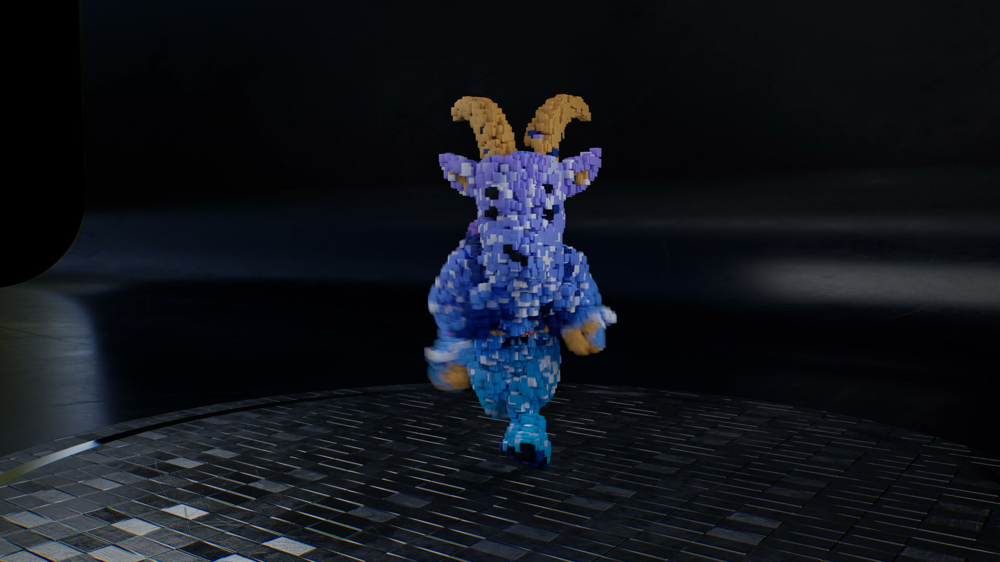

The site has an expressive opening, then settles into the same layout rhythm. Make the work take over the screen. Use the ribbon to connect scenes. Let color signal a new chapter.
My recommendation: five chapters, two major transitions, and much less repeated explanation.
Imagination. Made tangible.
Enter a different world.

Ideas with a life of their own.
See a smarter way to work.
Customer request
↓
Knowledge + context
↓
Useful answer · Approved action
Your next idea. Made tangible.
01 / Hero → work. The filament unicorn holds briefly as the headline moves away. Its ribbon sweeps diagonally across the frame and opens onto the first project.
Proposed scroll behavior: one short desktop hold, with a transition spanning roughly half a viewport. Keep the first project reachable immediately from the navigation.
Clickable composition storyboard, not the finished scroll animation. Static brand artwork stands in for the existing WebGL unicorn. Use the five chapter buttons above.
The strongest references for this site
Three ways to change the scene.
First choice / Section handoffs
Reveal through a shape.
Hiroki Watanabe’s March 2026 demo uses SVG masks to reveal fullscreen images in strips and grids. I inspected the horizontal-blind version in Chrome.
Capra adaptation: replace the rectangular pattern with a sweeping ribbon. Carry cyan, violet, and magenta through the wipe so it feels like part of the identity.
Codrops’ June 2026 rotating gallery changes the orientation of image planes as the visitor scrolls. I inspected its first variation in Chrome.
Capra adaptation: hold one large project stage while a preview lifts, turns slightly, and hands off to the next. Keep titles and project links stable and easy to read.
The July 2026 Curve Gallery places images along a 3D path with Three.js and GSAP. Its spatial composition rendered in Chrome during inspection.
Capra adaptation: a separate “Explore the studio” playground once we have more work. Too elaborate for the main two-project portfolio today; it would make the route to a project less direct.
Imagination: keep the approved filament hero; add the ribbon handoff.
Work: give TrailGoat and Purple Squirrel a shared visual stage with distinct color and short, readable descriptions.
Motion: expand the TrailGoat film into a theater moment. Video plays through its own controls; scrolling frames the scene.
Capabilities: condense design, web, and motion into a short editorial strip. Let the AI workflow assemble from request to knowledge to a useful response or approved action.
Studio + contact: end the big effects. Make the personal introduction and next step immediate.
Editorial judgment
More contrast. Less distance.
Move the detailed process and general FAQs into the relevant service or work pages. Fold the separate introduction into the hero. Combine repeated project and film explanations.
Give each chapter a different composition: open space → immersive work → dark theater → violet knowledge diagram → quiet invitation.
A small chapter index can show where you are and jump directly to Work, Expertise, or Contact. A visitor should be able to skip the choreography.
Do not make every section a pinned scene. Reserve the longest moment for the actual work. Avoid compulsory horizontal scrolling, giant spinning paragraphs, and long pauses before text becomes readable.
How I would build it
Primary tool: GSAP ScrollTrigger to coordinate the two main sequences with natural page scrolling. Its pin and scrub controls support a held stage and a timeline tied to scroll position. The existing WebGL hero would receive progress through an explicit controller. Official documentation ↗
Lightweight effects: CSS transforms, opacity, and native scroll timelines where supported. Chrome’s performance case study supports using browser-driven animation for suitable properties; it does not establish that complex SVG masks or WebGL rendering are free. Measure those separately. Performance reference ↗
Case-study navigation: optionally let the clicked project image expand into the next page using cross-document View Transitions. This is a click transition, separate from scrolling, and fits the existing multipage site. Use ordinary navigation as the fallback. MDN implementation guide ↗
Phone behavior and acceptance criteria
On phones, use naturally flowing project cards with short wipes and modest depth; remove desktop pins. Reduced motion shows complete static compositions. Keep real links, readable HTML, visible keyboard focus, and the existing animation controls.
Inspect the start, midpoint, end, and reverse scroll of each transition. No flash, blank gap, hidden CTA, or competing text.
Verify anchor jumps, refresh at mid-page, browser Back, keyboard navigation, resize, orientation change, and motion preference changes.
Profile on a real phone before release; aim for stable 60fps on the selected test hardware, reduce effects when it cannot sustain the target.
Render only visible WebGL work; preserve the static fallback. Do not add a second full-screen GPU scene for decoration.
Compare full-page length before and after. The current 1440×900 local homepage measures 7,791px tall; added pin distance must be offset by a tighter content edit.
Research status
Primary documentation and three live demos reviewed on September 28, 2026. The recommendations are design judgments for Capra, not a measured industry ranking. The storyboard is local and separate from the homepage. No production scroll implementation, physical-phone performance result, or deployment is claimed. No Unreal connection was used.